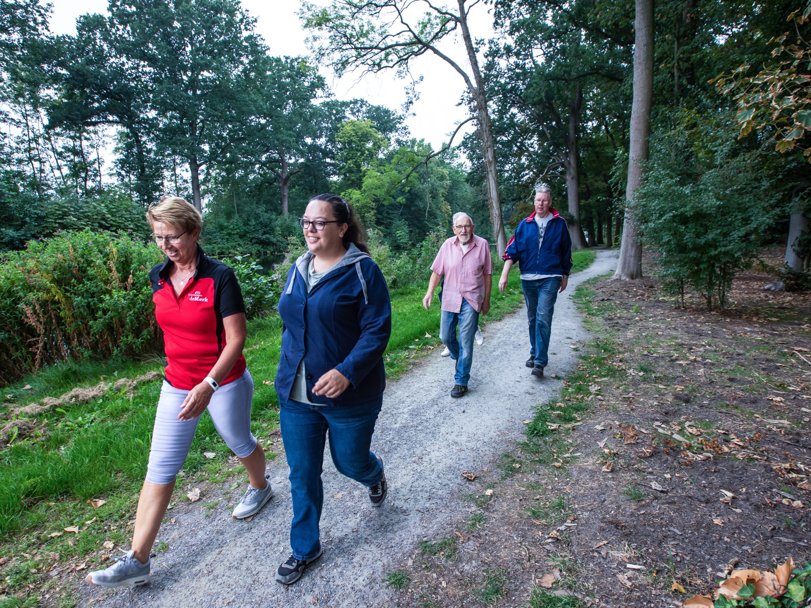

Begeleiding van loopgroepen
Binnen de Merk proberen wij naast het verhelpen van klachten ook klachten te voorkomen. Dit doen we door het organiseren van een wandelgroep, het begeleiden van de meer bewegen voor ouderen groep De Trochsetters en het aanbieden van medisch fitness.
De Wandelgroep
Bewegen kan ook gewoon wandelen zijn. Puur om te bewegen en omdat samen wandelen veel gezelliger is dan alleen. Dit doen we op donderdagmiddag van 13.00 tot 14.00. Wanneer u dit leuk lijkt, kunt u het altijd eens een keertje meelopen. Er zijn geen kosten aan verbonden en bij terugkomst staat er een kopje thee of koffie voor u klaar!
Iedere donderdag van 13.00 tot 14.00 uur organiseert Fysio De Merk een wandelgroepje. Het is vrijblijvend, gratis, en bovenal leuk om eraan mee te doen! We wandelen een uurtje door Joure (meestal onder begeleiding van een fysiotherapeute, en niet altijd dezelfde route), je snuift frisse lucht op, en het is goed voor je conditie. Naast dat ik gewoonlijk ook geregeld wandel, pak ik dit uurtje graag even mee, niet in de laatste plaats omdat ik ook weer eens andere mensen ontmoet. Helaas kleeft er ook een nadeel aan: je bent gebonden aan genoemde tijdstippen. Bij slecht weer gaat het niet door. (André Lageveen)
De Trochsetters
Sinds september 2014 begeleiden we vanuit de Merk een beweeggroep voor ouderen. Dit is op maandagochtend van 09.30 tot 10.30 in park Heremastatie onder leiding van Sieuwke. Hier worden oefeningen gedaan om mobiel, sterk en op conditie te blijven. Ook het plezier hebben bij bewegen word niet vergeten. Na een uur actief bezig te zijn geweest wandelen ze gezamenlijk naar Doppio waar een kop koffie wordt gedronken.